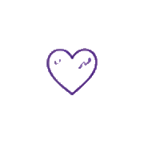
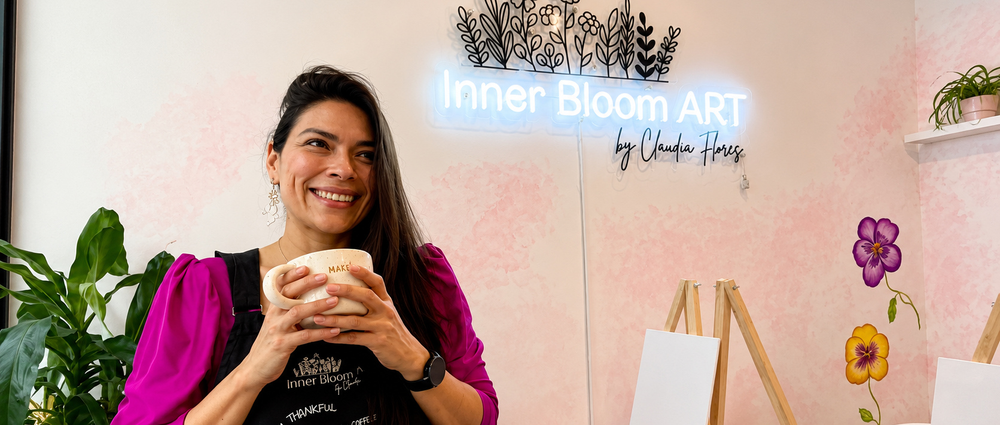

Meditación Guiada
Creamos una pausa para calmar la mente, habitar el presente y abrir un espacio de escucha interior.
METODOLOGÍA
Una forma amorosa, profunda y consciente
de volver a ti a través del
arte.
Aquí no se trata de pintar perfecto, sino de crear un espacio para sentir, expresarte y reconectar con tu esencia.

En Inner Bloom Art creemos que el arte no significa hacerlo todo perfecto,
sino darle un espacio
para
escuchar lo que sientes, expresarlo y reconectarte desde el amor y la creatividad.
Creamos una pausa para calmar la mente, habitar el presente y abrir un espacio de escucha interior.

La pintura, el color y los símbolos te ayudan a expresar aquello que muchas veces no sabes cómo decir.

A través de preguntas y reflexión, descubres con mayor claridad qué estás sintiendo y qué necesitas.

Pequeños actos simbólicos que te ayudan a cerrar ciclos, sembrar intenciones y dar significado a tu proceso.

Compartes este camino con otras mujeres que, como tú, están volviendo a sí mismas.
Bienvenida y respiración para conectar contigo y soltar el ritmo diario.
Reflexión y ejercicios para explorar lo que sientes y necesitas.
Pintas y creas desde la expresión auténtica, sin miedo a equivocarte.
Dar significado a lo vivido y honrar tu proceso para llevarlo a tu día.
Agradecer, compartir y celebrar tu proceso junto a otras almas.

Más calma
interior.

Claridad sobre lo
que sientes.
Un espacio seguro
para expresarte.
Mayor conexión
contigo misma.
Una nueva perspectiva
sobre lo que estás viviendo.
